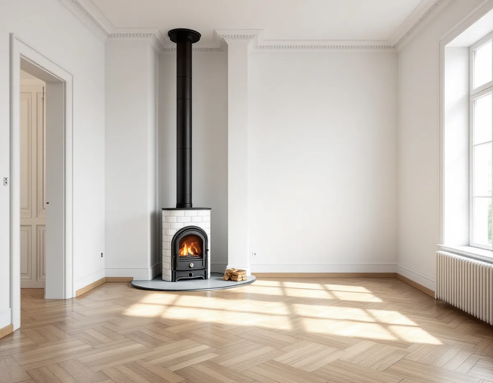
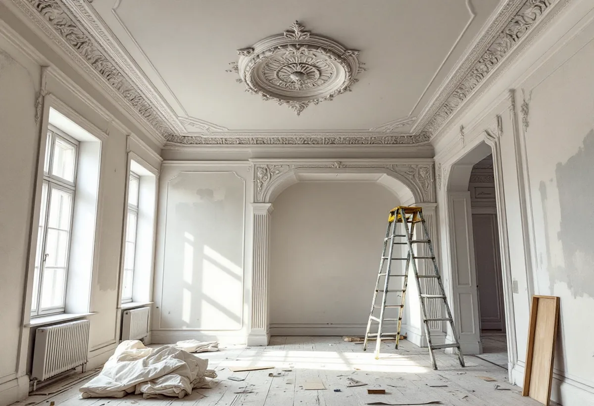
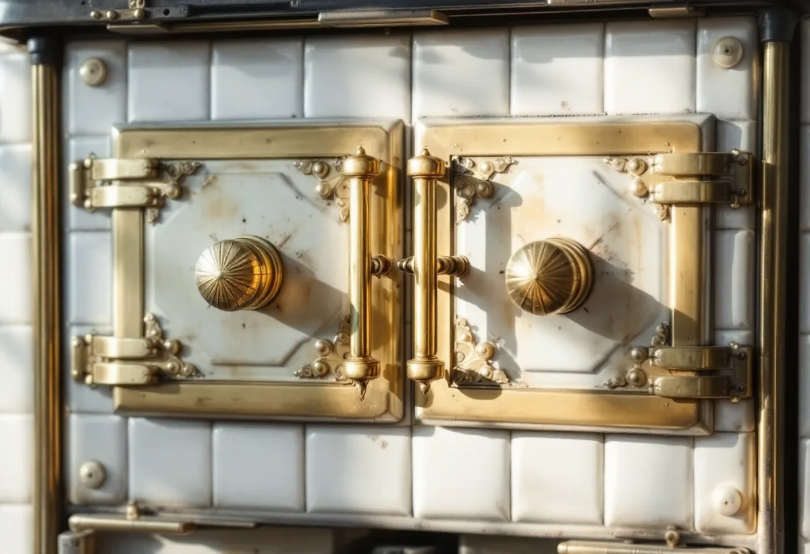

Platsbesök
Vi går igenom lägenheten och noterar dörrar, lister, stuckatur, fasta skåp och eldstäder.
I Vasastans stenstad har många lägenheter förändrats sedan husen byggdes, men det som finns kvar kan vara just det som ger huset dess värde. Geal Entreprenad AB totalrenoverar bostadsrätter i Vasastan och tar reda på vad som är utpekat i huset innan något rivs.

Stadsmuseets inventering av nordvästra Vasastaden omfattar området mellan Norrtullsgatan, Norra Stationsgatan, Gävlegatan, S:t Eriksgatan och Odengatan. Där började området söder om Karlbergsvägen bebyggas på 1880- och 1890-talen. De flesta som flyttade dit kom ur arbetar- eller lägre tjänstemannaklassen, och merparten av lägenheterna var små. Gathusen kunde ha något större och mer påkostade lägenheter, medan de enklaste låg i gårdshusen, och några praktlägenheter finns mot Odengatan, Karlbergsvägen och S:t Eriksgatan.
Inventeringen berättar också att få hus från början hade hiss, och att badrum och tvättstuga ofta låg i gemensamma lokaler på vinden eller på gården. I många av de äldsta husen kan lägenhetens badrum alltså vara ett senare tillägg. Husen inventerades 1974–78, och sedan dess har många förändringar skett både interiört och exteriört. Det som ser ursprungligt ut behöver därför inte vara det.

Stadsmuseet klassificerar byggnader i tre nivåer. Blått omfattar miljöer med synnerligen höga kulturhistoriska värden. Grönt betyder att miljön bedöms vara särskilt värdefull från historisk, kulturhistorisk, miljömässig eller konstnärlig synpunkt. Gult betyder positiv betydelse för stadsbilden och/eller visst kulturhistoriskt värde, medan grått inte går att hänföra till någon av kategorierna. Streckade fält är ännu inte klassificerade. Klassificeringen är ett expertutlåtande utan juridisk verkan, och prövningen görs i bygglovsprocessen.
Motiveringarna till klassificeringen finns i Bebyggelseregistret, och inventeringar och faktablad kan finnas på Digitala Stadsmuseet. Stockholms stad skriver att alla ändringar ska göras varsamt, och att en särskilt kulturhistoriskt värdefull byggnad inte får förvanskas, oavsett om åtgärden kräver lov eller anmälan. Inför arbetet kan en antikvarisk förundersökning och en konsekvensbeskrivning behövas, och ibland en sakkunnig inom kulturvärden. Är du osäker kan du kontakta Stadsmuseet med adress, fastighetsbeteckning, byggnadsår, kända ombyggnader och foton.
Finns det en kakelugn eller öppen spis i lägenheten väcker en totalrenovering ofta frågan om den ska användas igen eller kompletteras. Stockholms stad kräver anmälan och startbesked för att installera en eldstad, skorsten eller rökkanal, för att sätta in eller byta en spisinsats om eldningsförhållandena ändras, för att byta till en tyngre eldstad som kräver förstärkning och för en ny anslutning till befintlig rökkanal med håltagning och murning. Staden råder dig att tidigt rådgöra med skorstensfejarmästaren.
Nya eldstäder för ved eller pellets ska klara krav på utsläpp och lägsta verkningsgrad, och en CE-märkt produkt uppfyller dem. Miljöförvaltningen har tillsyn över eldningen och kan kräva att den begränsas om den orsakar olägenhet för människors hälsa. I en bostadsrätt krävs dessutom styrelsens tillstånd enligt bostadsrättslagen för att installera eller ändra en eldstad eller rökkanal. Om dörrar och foder finns mer under målare i Vasastan, om badrummet under badrumsrenovering i Vasastan, om golven under golvläggare i Vasastan och om större renoveringar på sidan om villarenovering.
Stadsmuseet uppdaterar kartan när nya bedömningar görs, och värderingarna kan ändras över tid. Ett streckat fält betyder att fastigheten ännu inte är klassificerad, till exempel för att bebyggelsen var för ung när klassificeringen gjordes. Museet tillämpar i dag en tidsgräns på tjugo år för det som ska värderas, och skriver att fastigheter som inte är klassificerade ändå kan ha stora kulturhistoriska värden.
Stockholms stad påpekar att kartan bara ger en första indikation och att det är du som byggherre som ansvarar för att ta reda på vad som gäller för fastigheten. Är huset blått eller grönt, eller omfattas det av skyddsbestämmelser i detaljplanen, krävs bygglov för åtgärder som annars kan vara bygglovsbefriade. Det är därför bra att ha klassificeringen och planbestämmelserna framför sig innan ritningarna till en totalrenovering görs, särskilt om renoveringen också berör fönster, balkong eller annat som syns utåt.

Vi går igenom lägenheten och noterar dörrar, lister, stuckatur, fasta skåp och eldstäder.
Vi läser klassificeringen och motiveringen i Bebyggelseregistret tillsammans med dig.
Vi tar fram en beskrivning av åtgärderna som underlag till styrelsen.
Det som ska bevaras, renoveras och byggas nytt redovisas var för sig.
Det som ska vara kvar skyddas, och eldstadsarbete börjar först efter startbesked.
Vi går igenom lägenheten rum för rum tillsammans med dig.
I en bostadsrätt ger Skatteverket rotavdrag för att mura och reparera öppen spis och kakelugn, liksom för annat arbete innanför lägenhetens tak, väggar och golv som du ansvarar för enligt stadgarna. Att sota skorstenar eller kontrollera eldstäder ger inget avdrag, och inte heller arbete på gemensamma ytor som tak, fasader, trapphus och entréer.
Företaget får dra av högst 30 procent av arbetskostnaden på fakturan. Rotavdraget är högst 50 000 kr per person och år och högst 75 000 kr tillsammans med rutavdrag. Material och resor ger inget avdrag. Geal drar avdraget direkt på fakturan.
Hur mycket av lägenheten som görs om, hur mycket av snickerier, stuckatur och eldstäder som ska bevaras och skyddas, om en eldstad ska tas i bruk igen och vilka krav föreningen ställer på arbetet påverkar mest. Efter ett gratis platsbesök får du ett skriftligt kostnadsförslag.
Renovera hela huset eller lägenheten.
Villarenovering →Takbyte, takbesiktning och plåtarbeten.
Takläggare i Vasastan →Stenstad, Röda Bergen och föreningarnas tak.
Takrenovering i Vasastan →Flytta badrummet, ny stam och frånluft.
Badrumsrenovering i Vasastan →När en lokal blir bostad.
Byggföretag i Vasastan →Fasadmålning för föreningar.
Fasadmålning i Vasastan →Ställning, tillstånd och etablering på gatan.
Fasadrenovering i Vasastan →Storgårdskvarteren och 20-talets fönster.
Fönsterbyte i Vasastan →Fönster i Birkastadens jugendhus.
Fönsterrenovering i Vasastan →Springor, kupning och underhåll.
Golvläggare i Vasastan →Stav- och fiskbensparkett.
Golvslipning i Vasastan →Kokvrån som blir kök.
Köksrenovering i Vasastan →Snickerier, fönster och sprucket spackel.
Målare i Vasastan →Takfönster, vindar och plåt.
Plåtslagare i Vasastan →Öppna upp, nya dörröppningar och listverk.
Snickare i Vasastan →Takbyte för föreningar och fastighetsägare.
Takbyte i Vasastan →Ny tapet på gamla putsväggar.
Tapetsering i Vasastan →